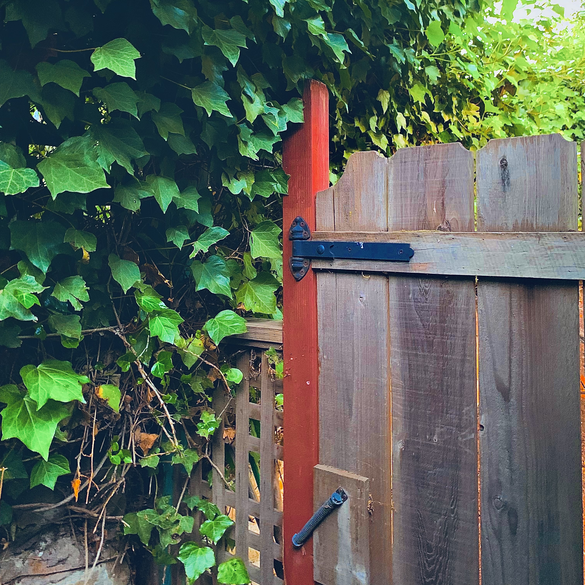

It's not a thing I take incredibly seriously but it's still great fun! I just like taking simple photos and doing a bit (well, more than a bit) of editing here and there. Do I like it because it's something i enjoy doing or do I like it because of how easy it is? It's a little bit of both... Nope, just because it's easy. I do like photography though. One of my favorite little pastimes.
Some flowers in our backyard. Didn't feel like dealing with the big wheel thing so I left it at our little stalemate.
Just a little lantern I saw when I was at Yotam's house. I thought it looked nice so I took a quick picture.
I took a couple of photos on the plane from a trip not too long ago. This is one of them.

This is another photo from the same flight. A lot of nice scenery of the mountains here.
This one I took in the car when we went on a small little drive last summer. I got a jacket on that trip. Nice jacket it is.
This one actually came from a close up video my sister took while we were at the beach during ski week (strange place to go during february, i know). I paused the video on this frame and I thought it looked cool so I screenshotted it, edited it, and got this.

Above is the current cover art for the album I've been working on since April 8th of 2021. I've rotated between several different ones but this is the one I'm sticking with for now
This is just a simple picture of one of the flowers in my backyard
A bit of a contrast, this is a picture of one of the flowers in the front of the house
This one too

This too...

I've milked my yard for flower pictures
Like i said...

Finally something different, this one is one of the lamps in front of the school
This is a picture of the gate at my house. Probably my favorite part of the whole house just because of the plants back there.
This picture I took on the trip that the plane and mountain pictures came from earlier
Yet another picture from that same flight
While this looks like a scene from some alien desert planet, it's a lamp from a resteraunt that had a napkin over it. That's it. That's the picture
A bunch of ice had frozen in a sort of small tower off of the roof of my brother's friends' tahoe house thing
ANOTHER picture from that SAME FLIGHT
Another plant picture from that trip
A picture I took before going up a little bit of a small mountain then going back down because my mom thought it was unsafe
A picture I took while we were in the car going to the brothers friends cabins parents acquaintences second cousins outhouse in tahoe thing. I probably could've ordered the pictures better and in chronological order but I guess this is fine.
A picture of the clouds I took while the rally was happening a while back. Not the day on the green or that other one but an older one.

you know where this is...
A picture of the moon (and some halo around it, don't really know what's up with that) that I took from our backyard
The last picture on this page and the last car picture from that drive to the tahoe outhouse thing